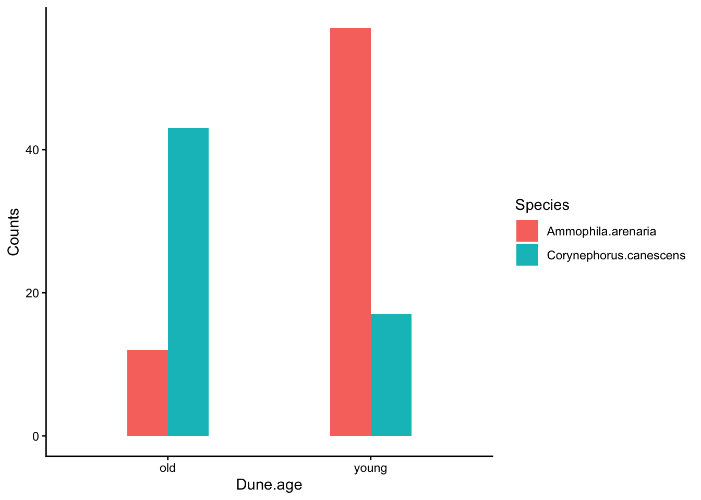
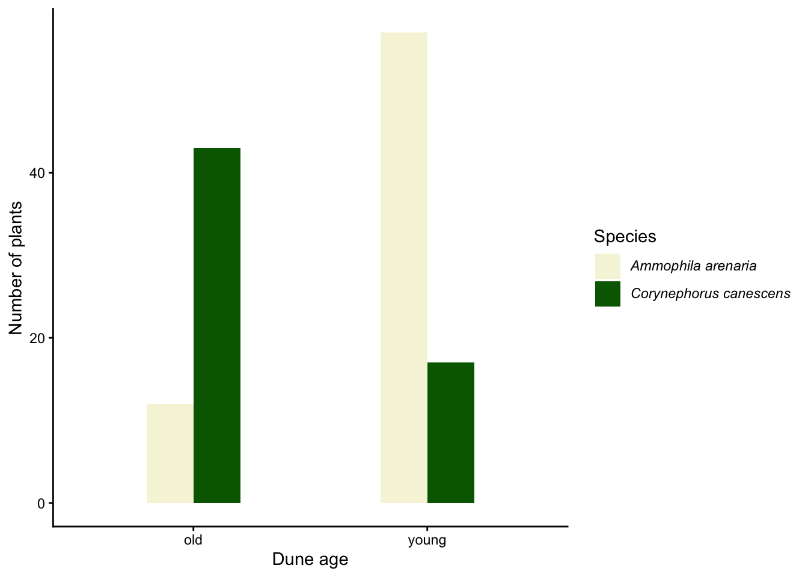

Code
dunegrass_data <- read.table("data/dunegrass.txt",
header=T,
sep="\t",
dec=",") chi2-testet (eller \(\chi\) 2 som det egentligen skall skrivas med grekiska bokstäver) är ett test för räknedata (count data), där du räknat någonting snarare än att du mätt det. Det kan exemelvis vara antalet individer eller antalet arter.
\(\chi\) 2 testet används för att undersöka om två kategoriska variabler påverkar antalet i de olika kategorierna. De kategoriska variablerna kan till exempel vara kön (hona/hane), stadium (juvenil/adult), art eller någon behandling eller annat som kan kategorisera din data.
En förutsättning för \(\chi\) 2 - testet är att dataseten skall vara relativt stora. Om du har mindre än fem som den förväntade frekvensen i någon av dina kategorier bör du istället använda dig av Fishers exakta test (se beskrivning nedan).
Vi har inventerat sanddyner i två succesionsstadier (unga eller gamla) och räknat antal individer av de två gräsarterna sandrör (Ammophila arenaria) och borsttåtel (Corynephorus canescens). Vi vill veta om antalet gräs av de två arterna skiljer sig från en slumpmässig fördelning mellan de två successionsstadierna.
Ladda ner följande fil dunegrass.txt (högerklicka, välj “spara länk som”) och spara filen på din hårddisk i en mapp med ett lämpligt namn.
Fortsätt med att läsa in datasetet och ge det ett namn, i det här fallet kallar vi det dunegrass_data. En detalerad beskrivning i hur man läser in filer finns i vår tidigare tutorial Läsa in data i R.
Glöm inte att dokumentera din kod i ett script, med kommentarer som förklarar vad du gör! Se vår tutorial om script om du behöver påminnelse om hur man skapar och använder script.
Börja med att titta på datans struktur med str().
'data.frame': 4 obs. of 3 variables:
$ Species : chr "Ammophila.arenaria" "Ammophila.arenaria" "Corynephorus.canescens" "Corynephorus.canescens"
$ Dune.age: chr "young" "old" "young" "old"
$ Counts : int 57 12 17 43$ Species: chr betyder att värderna i kolumnen Species är bokstäver (characters)
$ Dune.age: chr betyder att värderna i kolumnen Dune.age är bokstäver (characters)
$ Counts: int betyder att värderna i kolumnen Counts är heltal (integers)
Visa sedan de fem första raderna av ditt dataset med head() för att se att allt ser korrekt ut
Vi visualiserar data med ett stapeldiagram, och använder oss paketet ggplot2. Om du inte sedan tidigare har paketet installerat så gör du det med koden install.packages("ggplot2"). Innan du använder paketet behöver du läsa in det i din session i R genom funktionen library()

Grafen påminner om den vi gjort för t-test, så vi fokuserar på skillnaderna.
I första raden under aes() anger namnet på de variabler som skall vara på x-axeln respektive y-axeln med x = Dune.age, y = Counts. Vi vill att de olika nivåerna av vår faktor Species skall ha olika färg, därför lägger vi till fill = Species.
Raden stat_summary(geom = "bar", fun = "identity", position = "dodge", width = 0.4) + har några förändringar från när vi gjorde en graf baserat på medelvärden. Nu skall vi inte beräkna ett medelvärde för höjden på staplarna, utan vi vill använda de värden som finns i Counts. Därför anger vi fun = "identity". Vi vill också att de två arterna skall ligga bredvid varandra (parade staplar) och inte ovanpå varandra, därför anger vi position = "dodge".
Vi kan senare modifiera vår plot så den blir färdig för publikation, se avsnittet Modifiera din plot så den blir publiceringsduglig.
För att kunna analysera data med ett \(\chi\) 2 test måste datat vara i form av en korstabell (contingency table) vilket är en matris med två rader och två kolumner. Vi kan göra om vårt dataset dunegrass_data till en korstabell med funktionen xtabs(). Vi sparar vår korstabell i ett nytt objekt som vi kallar dunegrass_cont_table
Nu har vi en korstabell och kan göra ett \(\chi\) 2 test. Vi använder oss av funktionen chisq.test() och sparar resultatet i ett objekt vi kallar m.dunegrass
Vi tittar på resultatet genom att skriva in m.dunegrass och köra det
Pearson's Chi-squared test with Yates' continuity correction
data: dunegrass_cont_table
X-squared = 36.467, df = 1, p-value = 1.553e-09Vi får nu vår teststatistika med \(\chi\) 2 -värde (X-squared), frihetsgrader (df) och vårt p-värde (p-value). Vi ser att p-värdet är mindre än 0.05, vilket betyder att fördelningen av antal individer av de två arterna inte är slumpmässigt fördelat mellan habitaten.
Viktigt att notera är att \(\chi\) 2 testet testar om de observerande frekvenserna skiljs från de förväntade frekvenserna. Notera att de förväntade frekvenserna inte behöver vara att det är 25% i varje kategori, det kan ju vara så att en av arterna generellt är mycket vanligare än den andra, och/eller att en av miljöerna innehåller totalt sett fler individer.
Vi kan se det förväntade antalet i varje kategori genom att ange $expected efter modellnamnet.
Dune.age
Species old young
Ammophila.arenaria 29.4186 39.5814
Corynephorus.canescens 25.5814 34.4186Vi kan jämföra det med våra observerade frekvenser, som vi får fram genom att ange $observed efter modellnamnet.
Dune.age
Species old young
Ammophila.arenaria 12 57
Corynephorus.canescens 43 17Vi ser att det är fler observerade Corynephorus.canescens i gamla dyner är förväntat, och fler Ammophila.arenaria i unga dyner än förväntat.
De två gräsarterna är inte slumpmässigt fördelade mellan sanddyner av olika ålder, utan Ammophila arenaria förekommer i högst antal i unga sanddyner, medan Corynephorus canescens är vanligast i gamla sanddyner (\(\chi\) 2 test, \(\chi\) 2 = 36.47, df = 1, p < 0.001).
Det viktiga för att få göra ett \(\chi\) 2 test är att ingen av de förväntade frekvenserna är lägre än 5. Du ser de förväntade frekvenserna genom att ange $expected efter modellnamnet.
Om någon av dina förväntade frekvenser är lägre än fem kan man inte lita på de p-värden som ett \(\chi\) 2 test presenterar. Istället måste vi använda oss av Fisher’s exakta test, genom att använda funktionen fisher.test() istället förchisq.test(). Man har i övrigt samma arbetsgång.
Vi provar Fisher’s exakta test genom att först skapa en korstabell med hanars och honors förekomst på olika djup. Du behöver inte lära dig koden för att skapa en korstabell från grunden i R, du läser oftast in dina data från en fil. Kopiera bara koden och kör den.
Male Female
Shallow 7 2
Deep 0 5Om vi använder chisq.test() får vi en varning:
Warning in chisq.test(depth.data): Chi-squared approximation may be incorrectVi ser på våra förväntade frekvenser att alla är lägre än 5.
Vi använder oss därför av Fisher´s exakta test.
Fisher's Exact Test for Count Data
data: depth.data
p-value = 0.02098
alternative hypothesis: true odds ratio is not equal to 1
95 percent confidence interval:
1.449481 Inf
sample estimates:
odds ratio
Inf Vi anger endast ett p-värde om vi använder Fisher´s exakta test.
Vår enkla figur där vi enbart anger dataset och våra variablar blev ok, men vi kan förbättra den. Vi skulle vilja fixa till följande:
Vi vill att det skall stå “Dune age” och inte Dune.age på x-axeln, fixas med xlab()
Vi vill ange att responsvariabeln är “Number of plants”, fixas med ylab()
Vi vill välja andra färger (gärna färger som motsvarar de två gräsens färg när man ser dem i fält), och vi vill att artnamnen skall vara kursiverade och utan punkt i vår legend. Fixas med scale_fill_manual()
library(ggplot2)
plot.dunegrass.final <- ggplot(dunegrass_data, aes(x = Dune.age, y = Counts, fill = Species)) +
stat_summary(geom = "bar", fun = "identity", position = "dodge", width = 0.4) +
xlab("Dune age")+
ylab("Number of plants")+
scale_fill_manual(
values = c(
"Ammophila.arenaria" = "beige",
"Corynephorus.canescens" = "darkgreen"
),
labels = c(
expression(italic("Ammophila arenaria")),
expression(italic("Corynephorus canescens"))
)
) +
theme_classic() +
theme(
legend.text = element_text(hjust = 0)
)
plot.dunegrass.final
Våra justeringar i xlab() och ylab() är självförklarande, och vi har tidigare gått igeom dem under vår tutorial om t-test.
Vi gör en hel del justeringar i scale_fill_manual(). På samma sätt som tidigare anger vi vilka nivåer av vår grupperande faktor (se vilken det är i aes()) som skall ha vilken färg. Det anger vi med koden
values = c( "Ammophila.arenaria" = "beige", "Corynephorus.canescens" = "darkgreen" ),
För att få artnamnen kursiverade är det en ny kod vi får lära oss (vi är fortfarande inom funktionen scale_fill_manual()). Vi använder oss av expression() för att modifiera texten Det är väldigt vanligt att behöva göra det, vi biologer vill ofta ha med latinska artnamn i våra grafer, och de skall vara kursiverade!
labels = c( expression(italic("Ammophila arenaria")), expression(italic("Corynephorus canescens")) )
italic() står för kursiv text, och eftersom vi inte vill ha någon punkt mellan släkte och artepitet (dvs Ammophila arenaria och inte Ammophila.arenaria) så skriver vi manuellt in vad som skall stå i vår legend.
Nu borde grafens kod vara klar, men om du kör den så upptäcker du att våra latinska artnamn blir centrerade och inte vänsterjusterade! Det är expression() som är boven i dramat, den har som grundinställning att centrera allt den gör. För att fixa det måste vi ställa in vårat tema så att det ignorerar andra textjusteringar och alltid har vänsterjusterad text i legenderna. Vi gör det genom att lägga till en sista rad kod med funktionen theme()
theme( legend.text = element_text(hjust = 0) )
hjust = 0 betyder vänsterjustering. Notera att eftersom vår tidigare sista rad i scriptet theme_classic() inte längre är sista rad behöver vi lägga till ett plustecken + sist i den raden så att R förstår att scriptet fortsätter nedanför.